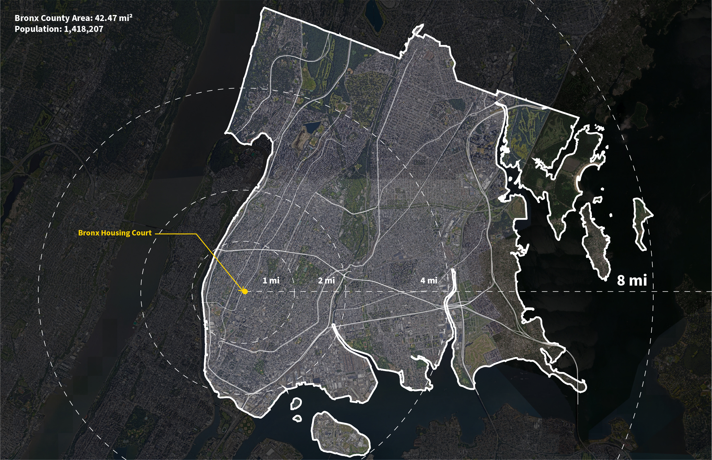
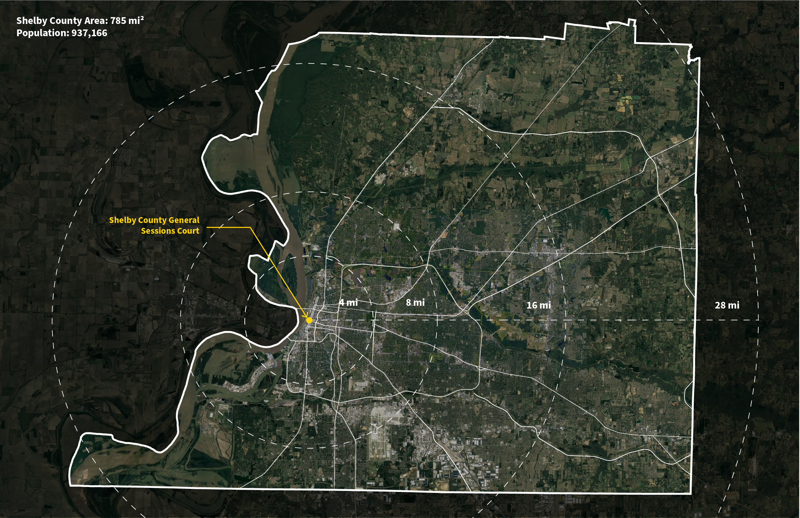
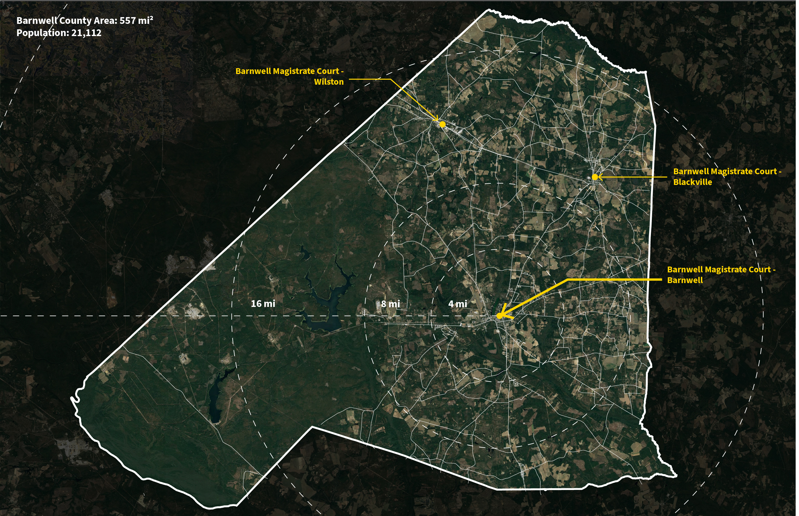
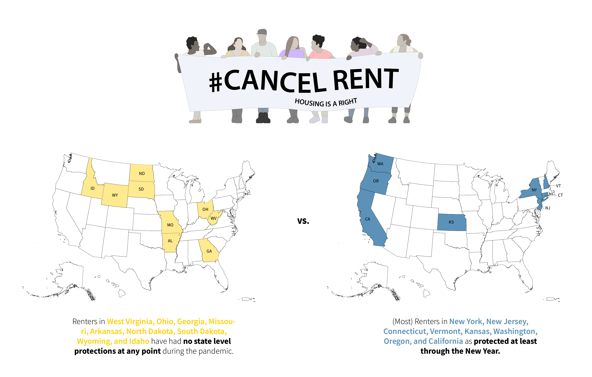
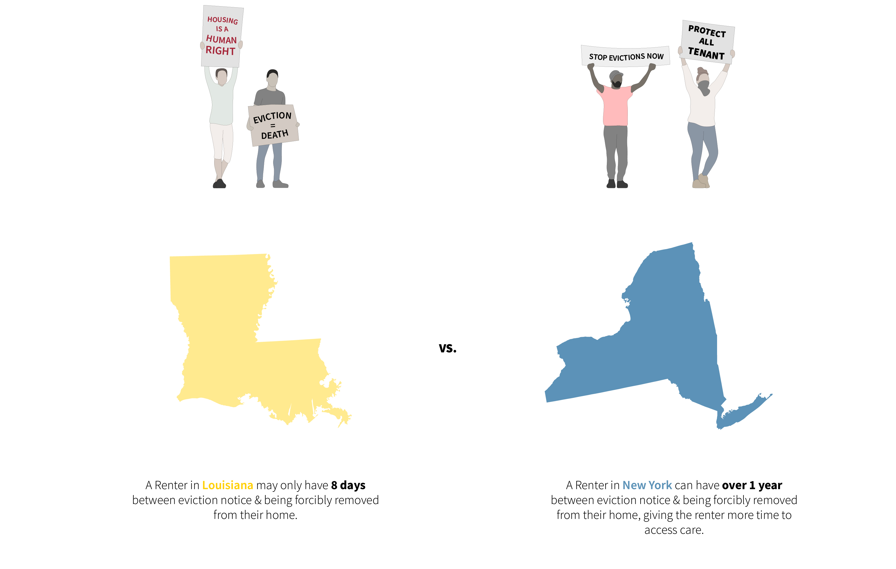

1 / 4

--
2 / 4

--
3 / 4

--
4 / 4

--
We wanted to better understand how evictions are happening: both in normal times and during the pandemic. The process is complicated and can vary widely from place to place, making the experience even more confusing for renters.

At the onset of the COVID-19 pandemic in the US, many states saw suspending evictions as a tool to protect people and public health. But these moratoriums varied widely in their length and their scope. Some states opted for policies only protecting tenants recieving government subsidies, while others covered most renters.
Variation in procedure by state existed before the pandemic as well. The above chart shows each state's minimum and maximum timeline for each major step of the eviction process.
Long story short, a longer timeline is better for tenants. It give them more time to find employment or another place to live, more time to secure legal help. Short timelines create compounded difficulties, like getting time off work for a court date with only a few days notice or having just 24 hours after a verdict is made to pack up your entire apartment.
The architecture and planning of the existing court system exacerbate the obstacles Renters face in eviction proceedings in a few ways. First, many counties have one eviction court for their whole county, which can make accessing the court very difficult. It can be a challenge to physically get there, get the time off work or childcare, and in general, the courts are disconnected from the communities they service.
The existing prototypical court room creates a strong heirarchy between the tenant, landlord, and judge. With designated seating, separated entrances, and a series of controlled thresholds.
Within the courtroom each person has a specific role with spatial limitations. These conditions are not designed for collaboration.